أطياف الأشعة السينية ومنحنيات الضوء وتوزيعات الطاقة الطيفية للبلازارات التي رصدها Swift مراراً
الملخص
تُعد أبحاث البلازارات من الموضوعات الساخنة في الفيزياء الفلكية الحديثة خارج المجرة. ويرجع ذلك إلى أن هذه المصادر هي أكثر أنواع مصادر -ray خارج المجرة وفرةً، ويُشتبه في أنها تؤدي دوراً محورياً في الفيزياء الفلكية متعددة الرسل. استخدمنا swiftxrtproc، وهي أداة لإجراء تحليل طيفي وفوتومتري دقيق لبيانات Swift-XRT لجميع البلازارات التي رصدها Swift ما لا يقل عن 50 مرة بين ديسمبر 2004 ونهاية 2020. نقدم قاعدة بيانات لأطياف الأشعة السينية، وقيم معاملات أفضل ملاءمة، ومعدلات العد، وتقديرات الفيض في عدة نطاقات طاقية لأكثر من 31,000 رصد بالأشعة السينية ولقطات منفردة تخص 65 بلازاراً. دُمجت نتائج تحليل الأشعة السينية مع بيانات أرشيفية أخرى متعددة الترددات لبناء توزيعات الطاقة الطيفية عريضة النطاق (SEDs) ومنحنيات الضوء طويلة الأمد لجميع المصادر في العينة. تُظهر دراستنا أن تغيراً كبيراً في لمعان الأشعة السينية على مقاييس زمنية مختلفة حاضر في جميع الأجرام. كما تُرصد تغيرات طيفية على نحو متكرر، بسلوك "أصلب عند السطوع" أو "ألين عند السطوع" تبعاً لنوع SED في البلازارات. وتُظهر أيضاً طاقة ذروة مركبة السنكروترون ( ) في SED لبلازارات HBL، المقدرة من الشكل اللوغاريتمي-القطع المكافئ لأطيافها في الأشعة السينية، تغيرات كبيرة جداً في المصدر نفسه، تمتد على مجال يزيد على رتبتين عشريتين في Mrk421 وMrk501، وهما الجرمان ذوا أفضل مجموعات البيانات في عينتنا.
keywords:
المجرات: نشطة – الكوازارات: عامة – الأشعة السينية: المجرات – المجرات: أجرام BL Lacertae: – الطرائق: تحليل البيانات – قواعد البيانات الفلكية: الفهارس1 مقدمة
البلازارات هي أقوى المصادر غير الانفجارية في الكون. وما يجعل هذه المصادر مميزة مقارنةً بأنواع أخرى من النوى المجرية النشطة (AGN, Padovani et al., 2017) هو أن انبعاثها الكهرومغناطيسي تهيمن عليه إشعاعات غير حرارية تتولد داخل نفاثة تبتعد عن الثقب الأسود فائق الكتلة المركزي بسرعات نسبية وتتجه نحو الأرض (انظر مثلاً Blandford and Rees, 1978; Urry and Padovani, 1995; Padovani et al., 2017).
تُصنَّف البلازارات فرعياً إلى كوازارات راديوية ذات طيف مسطح (FSRQs) وأجرام BL Lacertae (أو BL Lacs)، وذلك اعتماداً على أطيافها البصرية: إذ تُظهر FSRQs خطوط انبعاث عريضة مثل الأجرام شبه النجمية الهادئة راديوياً (QSOs)، في حين لا تُظهر BL Lacs في أقصى الأحوال إلا خطوط انبعاث ضعيفة جداً، وتكون في حالات عدة عديمة الملامح تماماً (مثلاً Falomo et al., 2014).
تُظهر توزيعات الطاقة الطيفية للبلازارات من الراديو إلى -ray (SED، أي مخطط فيض f بدلالة التردد ) دائماً شكلاً ذا "حدبتين" (انظر مثلاً Abdo et al., 2010b; Giommi et al., 2012). وتُعزى الحدبة منخفضة الطاقة، التي تبلغ ذروتها بين الأشعة تحت الحمراء البعيدة ونطاق الأشعة السينية، عموماً إلى إشعاع السنكروترون الصادر عن جسيمات نسبية تتحرك في مجال مغناطيسي داخل النفاثة. أما المركبة الثانية، الممتدة من الأشعة السينية إلى نطاق -ray، فتُفسَّر عادةً على أنها تشتت كومبتوني عكسي للإلكترونات على فوتونات مولدة سنكروترونياً، أو على مجال فوتوني آخر. وتبعاً لما إذا كانت ذروة الجزء السنكروتروني من SED ( ) تقع عند ترددات (أو طاقات) منخفضة أو متوسطة أو عالية، صُنفت البلازارات على أنها أجرام من نوع LBL أو IBL أو HBL11 1 LBL: Hz; IBL: Hz Hz; HBL: Hz.، وذلك أصلاً لأجرام BL Lac فقط (Padovani and Giommi, 1995). ثم وُسّع هذا التصنيف لاحقاً إلى FSRQs بواسطة Abdo et al. (2010a) الذي استخدم ترميز LSP وISP وHSP. ونعتمد في هذه الورقة الترميز الأصلي LBL وIBL وHBL لجميع أنواع البلازارات.
تحتل البلازارات موقعاً مركزياً في فيزياء الطاقات العالية خارج المجرة اليوم، إذ إنها بفارق كبير أكثر أنواع مصادر -ray شيوعاً عند خطوط العرض المجرية العالية (Abdollahi et al., 2020; Ballet et al., 2020)، ومن المتوقع أن تُكتشف بغزارة في سماء -ray ذات الطاقات العالية جداً (E50 GeV) التي ستُمسح قريباً بواسطة جيل جديد من مراصد VHE مثل CTA (Cherenkov Telescope Array Consortium et al., 2019) وLHAASO (La Mura et al., 2020)22 2 http://english.ihep.cas.cn/lhaaso. كما اقتُرحت البلازارات لأداء دور رئيسي في حقل الفيزياء الفلكية متعددة الرسل الناشئ (مثلاً Mannheim, 1995; Resconi et al., 2017)، وتتزايد أهميتها في هذا المجال بعد ربط الجرم TXS0506+056، وربما عدة بلازارات أخرى، ببعض نيوترينوات IceCube الفلكية عالية الطاقة (مثلاً IceCube Collaboration et al., 2018; Padovani et al., 2018; Giommi et al., 2020c).
في إطار مبادرة Open Universe (Giommi et al., 2020a) بدأنا مؤخراً سلسلة أنشطة تهدف إلى توليد منتجات علمية شفافة من بيانات متعددة الترددات حصل عليها مرصد Neil Gehrels Swift (Gehrels et al., 2004, فيما يلي Swift) وأقمار فلكية أخرى. ومن هذه البرامج Open Universe for blazars 33 3 https://sites.google.com/view/ou4blazars، وهو مكرس لفئة البلازارات.
Open Universe مبادرة تابعة لمكتب الأمم المتحدة لشؤون الفضاء الخارجي (UNOOSA) هدفها جعل بيانات الفلك وعلوم الفضاء أكثر انفتاحاً وتيسير اكتشافها، وإتاحتها بلا حواجز بيروقراطية أو إدارية أو تقنية، ومن ثم جعلها قابلة للاستخدام من أوسع مجتمع ممكن، من الباحثين المحترفين إلى جميع المهتمين بعلوم الفضاء. وإلى جانب إحداث أثر في التعليم وبناء القدرات للقرن الحادي والعشرين، فإن أحد الأهداف الرئيسية لمبادرة Open Universe هو زيادة إنتاجية أبحاث الفضاء. وبذلك تسعى إلى الإسهام في ديمقراطية علوم الفضاء وتحقيق بعض أهداف الأمم المتحدة للتنمية المستدامة (SDGs). وقد اقترحت إيطاليا هذه المبادرة أولاً على لجنة استخدام الفضاء الخارجي في الأغراض السلمية (COPUOS) في 2016، وهي الآن قيد التنفيذ داخل UNOOSA، بمساهمة عدد من العلماء والمؤسسات من بلدان مختلفة.
في ورقة سابقة (Giommi et al., 2019, فيما يلي الورقة I) قدمنا جيلاً جديداً من المنتجات الفلكية لجميع البلازارات المفهرسة التي رصدها Swift-XRT خلال أول 14 سنة من نشاطه. وفي هذه الورقة نقدم تحليلاً طيفياً وتصويرياً وزمنياً مفصلاً بالأشعة السينية لجميع الأرصاد واللقطات المنفردة44 4 لقطة رصد Swift هي الفاصل الزمني الذي يُقضى في رصد هدف بصورة متصلة. ويتكون الرصد الكامل من لقطة واحدة أو أكثر تشترك في معرف الرصد نفسه لعينة من 65 بلازاراً رصدها Swift أكثر من 50 مرة على مدى 16 سنة، منذ الإطلاق حتى نهاية 2020. وتُستخدم منتجات البيانات الناتجة الجاهزة علمياً لتجميع SED ومنحنى ضوء الأشعة السينية لكل مصدر في العينة. وقد عرض Giommi (2015) نسخة أولية من هذا المشروع بمناسبة الذكرى العاشرة لإطلاق مهمة Swift. وتتاح جميع النتائج عبر منصة Open Universe، وASI SSDC، والمرصد الافتراضي (VO)، ومن خلال طرائق أخرى لإصدار البيانات. وعلى وجه الخصوص، تتاح جميع نقاط بيانات SED ومنحنيات الضوء عبر أداة VOU-blazars (Chang et al., 2020).
يُقصد بهذا العمل أن يكون إسهاماً في هدف إنشاء قاعدة بيانات عالية الشفافية مخصصة للبلازارات، مستندة إلى أكثر مبادئ الوصول المفتوح إلى البيانات ومقاربات الرؤى السلوكية تقدماً55 5 https://www.oecd.org/gov/regulatory-policy/behavioural-insights.htm.
تُنظَّم الورقة كما يأتي. في القسم 2 نعرّف العينة، وفي القسم 3 نصف تحليل البيانات بالتفصيل، وفي القسم 4 نعرض نتائج تحليل بيانات XRT، مع توزيعات الطاقة الطيفية عريضة النطاق ومنحنيات ضوء الأشعة السينية. وفي القسم 5 نناقش النتائج.
2 البلازارات التي رصدها Swift-XRT مراراً
على الرغم من أن Swift صُمم خصيصاً لعلم انفجارات أشعة غاما، فقد أثبت أنه مرصد متعدد الأغراض ومتعدد الترددات بالغ الفاعلية. وقد رُصد عدد كبير من مصادر الأشعة السينية الساطعة وشديدة التغير مرات عديدة بين الإطلاق في نوفمبر 2004 ونهاية 2020. وترد قائمة البلازارات التي رُصدت ما لا يقل عن 50 مرة في هذه الفترة باستخدام تلسكوب الأشعة السينية (XRT, Burrows et al., 2005) في الجدول LABEL:TheSample، حيث يعطي العمود 1 الاسم الشائع أو التاريخي للمصدر، ويعطي العمود 2 اسم الجرم في فهرس BZCAT (Massaro et al., 2015) أو فهارس 3HSP (Chang et al., 2019)، أو وفق تسمية IAU في حال لم يكن الجرم مدرجاً في هذين الفهرسين، ويعطي العمود 3 تصنيف SED للبلازار (LBL أو IBL أو HBL)، ويعطي العمود 4 عدد أرصاد XRT ذات تعريض أكبر من 200 ثانية في نمط عد الفوتونات (PC) أو نمط التوقيت ذي النافذة (WT) (انظر Burrows et al., 2005, للحصول على تفاصيل أنماط القراءة)، ويعطي العمود 5 النسبة بين أدنى وأعلى فيض مرصود عند 1keV. وتضم القائمة 65 جرماً، منها 24 من نوع HBL، و12 من نوع IBL و29 من نوع LBL. ويُظهر التوزيع السماوي للعينة الفرعية من المصادر المرصودة أكثر من 100 مرة، المبين في الشكل 1، أن البلازارات التي وجه إليها Swift أكثر أرصاده تقع غالباً في السماء الشمالية.
وعلى الرغم من أن البيانات المقدمة في هذه الورقة ربما تمثل أكبر مجموعة متاحة من قياسات الأشعة السينية المتجانسة للبلازارات، فإنها بعيدة عن أن تكون مجموعة أرصاد أُجريت في أوقات عشوائية على عينة من مصادر مختارة عشوائياً، وهو ما يلزم لرؤية غير متحيزة للبلازارات. لذلك ينبغي لأي اعتبار إحصائي يستند إلى النتائج المعروضة هنا أن يأخذ في الحسبان انحيازات اختيارية مهمة محتملة.
| Common or | 5BZB or 3HSP | SED | Obs. | fmax/fmin |
|---|---|---|---|---|
| discovery name | IAU denomination | type | with good | @1keV |
| spectra | ||||
| (1) | (2) | (3) | (4) | (5) |
| 1ES0033+595 | 3HSPJ003552.6+595004 | HBL | 141 | 8.3 |
| PKS0208512 | 5BZUJ0210-5101 | LBL | 161 | 31.7 |
| 3C66A | 5BZBJ0222+4302 | IBL | 109 | 16.2 |
| 1ES0229+200 | 3HSPJ023248.6+201717 | HBL | 80 | 3.8 |
| PKS0235+164 | 5BZBJ0238+1636 | LBL | 185 | 172.8 |
| 1H0323+342 | 5BZUJ0324+3410 | IBL | 147 | 6.8 |
| 1ES0414+009 | 3HSPJ041652.5+010524 | HBL | 51 | 4.3 |
| 3C120 | 5BZUJ0433+0521 | LBL | 176 | 4.3 |
| PKS0506-61 | 5BZQJ0506-6109 | LBL | 59 | 4.0 |
| TXS0506+056 | 5BZBJ0509+0541 | IBL | 82 | 13.4 |
| GB6J0521+2113 | 3HSPJ052146.0+211251 | HBL | 81 | 110.4 |
| 5BZQJ0525-4557 | 5BZQJ0525-4557 | LBL | 51 | 7.2 |
| PKS0528+134 | 5BZQJ0530+1331 | LBL | 134 | 25.2 |
| RXSJ05439-5532 | 3HSPJ054357.2-553208 | HBL | 77 | 7.9 |
| PKS0548-322 | 3HSPJ055040.6-321616 | HBL | 63 | 3.8 |
| PKS0637-752 | 5BZQJ0635-7516 | LBL | 67 | 3.5 |
| 1ES0647+250 | 3HSPJ065046.5+250360 | HBL | 60 | 8.4 |
| 5BZBJ0700-6610 | 5BZBJ0700-6610 | IBL | 65 | 7.9 |
| EXO0706.1+5913 | 3HSPJ071030.1+590821 | HBL | 64 | 5.3 |
| S50716+714 | 5BZBJ0721+7120 | IBL | 329 | 69.6 |
| 3FGLJ0730.5-6606 | 3HSPJ073049.5-660219 | HBL | 64 | 24.6 |
| GB6J0830+2410 | 5BZQJ0830+2410 | LBL | 104 | 48.9 |
| S50836+71 | 5BZQJ0841+7053 | LBL | 77 | 5.5 |
| GB6J0849+5108 | 5BZUJ0849+5108 | LBL | 56 | 20.9 |
| OJ287 | 5BZBJ0854+2006 | IBL | 670 | 122.5 |
| PKS0921-213 | 5BZUJ0923-2135 | LBL | 95 | 5.0 |
| S40954+658 | 5BZBJ0958+6533 | LBL | 58 | 57.0 |
| 1ES1011+496 | 3HSPJ101504.1+492601 | HBL | 48 | 12.5 |
| Mrk421 | 3HSPJ110427.3+381232 | HBL | 1163 | 107.4 |
| PKS1130+009 | 5BZQJ1133+0040 | LBL | 58 | 13.9 |
| GB6J1159+2914 | 5BZQJ1159+2914 | LBL | 75 | 17.3 |
| MS1207.9+3945 | 3HSPJ121026.6+392908 | HBL | 411 | 6.5 |
| 1ES1218+304 | 3HSPJ122122.0+301037 | HBL | 113 | 12.5 |
| ON231 | 5BZBJ1221+2813 | IBL | 120 | 82.0 |
| PKS1222+216 | 5BZQJ1224+2122 | IBL | 113 | 10.5 |
| 3C273 | 5BZQJ1229+0203 | LBL | 326 | 10.2 |
| 3HSP J123800+263553 | 3HSP J123800+263553 | HBL | 83 | 5.5 |
| 3C279 | 5BZQJ1256-0547 | LBL | 421 | 11.4 |
| PKS1406-076 | 5BZQJ1408-0752 | LBL | 82 | 8.6 |
| PKS1424+240 | 5BZBJ1427+2348 | LBL | 85 | 16.3 |
| PKS1424-41 | 5BZQJ1427-4206 | LBL | 63 | 7.4 |
| H1426+428 | 3HSPJ142832.6+424021 | HBL | 179 | 3.8 |
| PKS1502+106 | 5BZQJ1504+1029 | LBL | 105 | 8.9 |
| PKS1510-08 | 5BZQJ1512-0905 | IBL | 267 | 6.8 |
| 1H1515+660 | 3HSPJ151747.6+652523 | HBL | 54 | 5.7 |
| 4FGLJ1544.3-0649 | J154419.7-064916 | HBL | 50 | 34.7 |
| PG1553+113 | 3HSPJ155543.1+111124 | HBL | 333 | 21.6 |
| PKS1622-297 | 5BZUJ1626-2951 | LBL | 85 | 122.7 |
| B31633+382 | 5BZQJ1635+3808 | LBL | 144 | 27.2 |
| Mrk501 | 3HSPJ165352.2+394537 | HBL | 738 | 16.6 |
| IZW187 | 3HSPJ172818.6+501311 | HBL | 160 | 13.1 |
| PKS1730-130 | 5BZQJ1733-1304 | LBL | 93 | 14.0 |
| S41749+701 | 5BZBJ1748+7005 | IBL | 57 | 12.2 |
| S51803+784 | 5BZBJ1800+7828 | LBL | 72 | 6.0 |
| 3C371 | 5BZBJ1806+6949 | IBL | 62 | 10.0 |
| EXO1811.7+3143 | 3HSPJ181335.2+314418 | HBL | 57 | 172.0 |
| 2E1823.3+5649 | 5BZBJ1824+5651 | LBL | 70 | 7.5 |
| 4C+56.27 | 5BZB J1824+5651 | LBL | 66 | 7.5 |
| PKS1830-211 | 5BZQJ1833-2103 | LBL | 72 | 3.8 |
| Common or | 5BZB or 3HSP | SED | Obs. | fmax/fmin |
|---|---|---|---|---|
| discovery name | IAU denomination | type | with good | @1keV |
| spectra | ||||
| (1) | (2) | (3) | (4) | (5) |
| 1ES1959+650 | 3HSPJ195959.8+650855 | HBL | 487 | 20.0 |
| PKS2155-304 | 3HSPJ215852.1-301332 | HBL | 240 | 57.3 |
| BLLac | 5BZBJ2202+4216 | IBL | 545 | 206.6 |
| CTA102 | 5BZQJ2232+1143 | LBL | 138 | 20.8 |
| 3C454.3 | 5BZQJ2253+1608 | LBL | 414 | 24.4 |
| 1ES2344+514 | 3HSPJ234704.8+514218 | HBL | 184 | 10.3 |
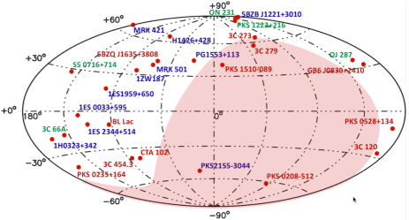
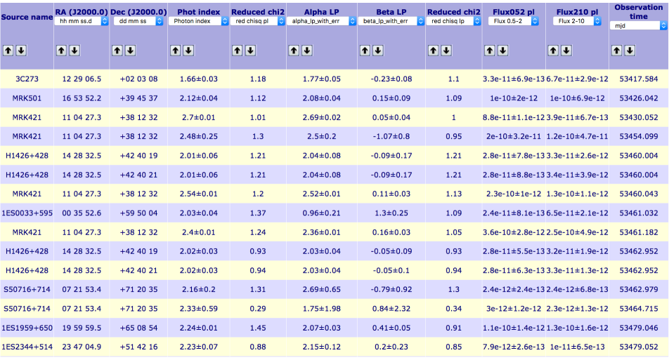
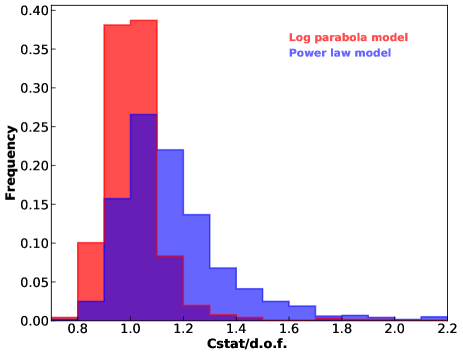
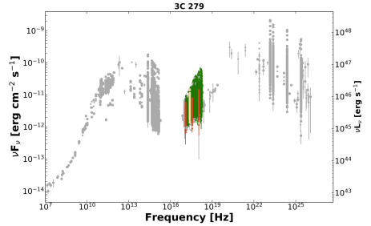
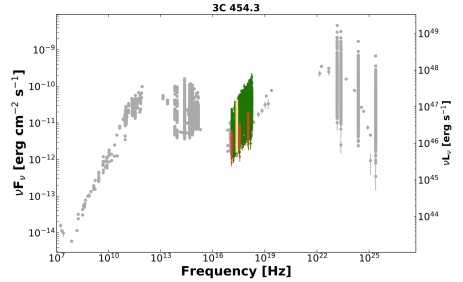
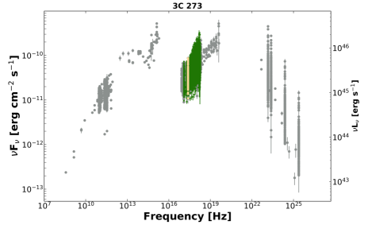
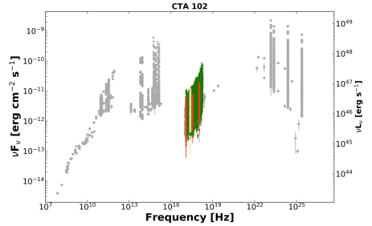
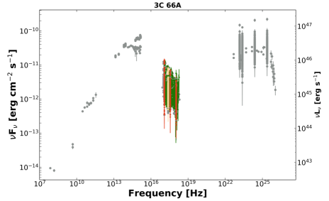
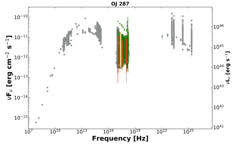
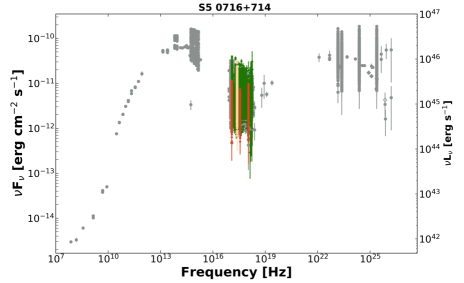
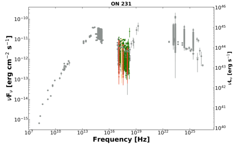
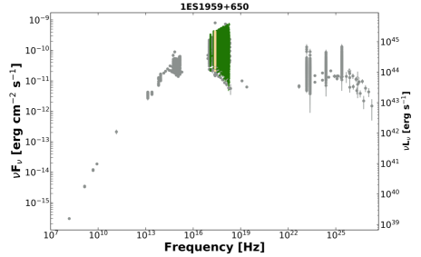
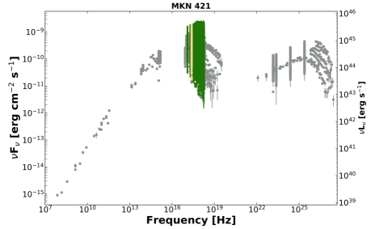
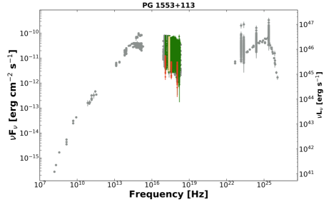
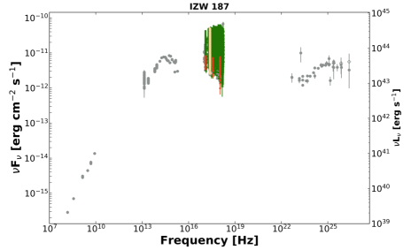
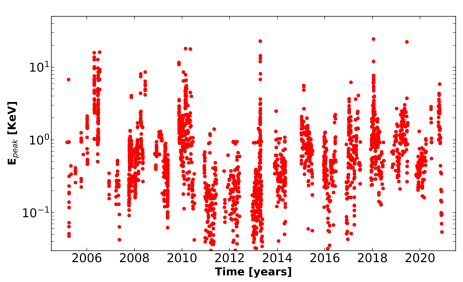
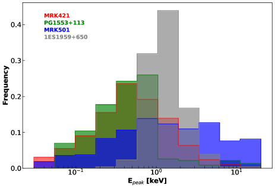
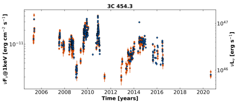
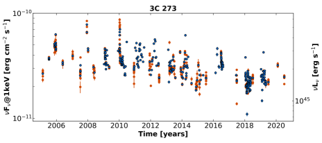
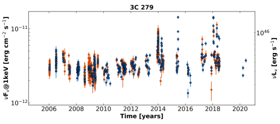
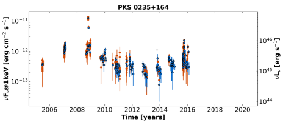
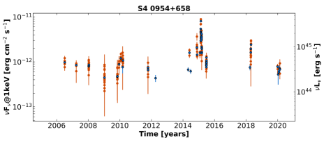
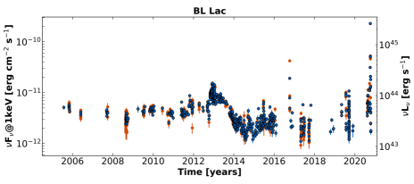
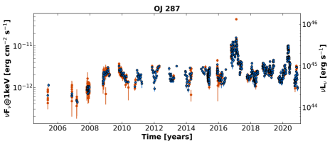
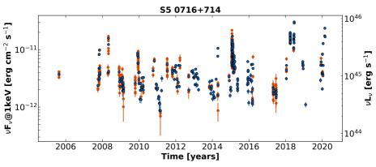
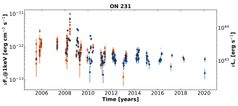
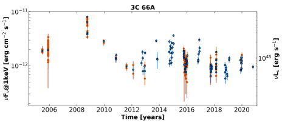
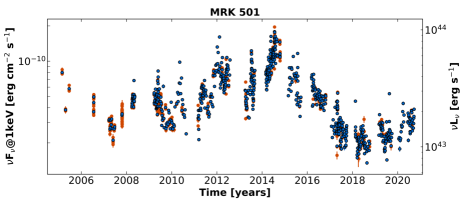
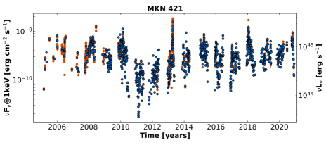
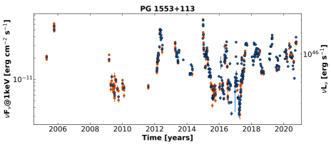
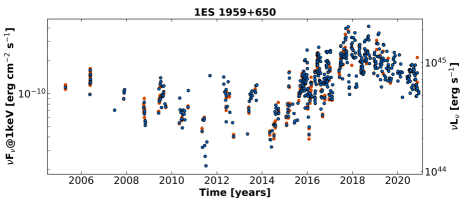
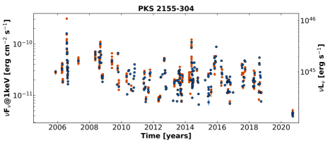
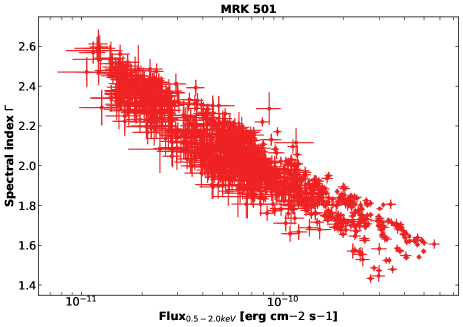
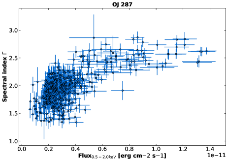
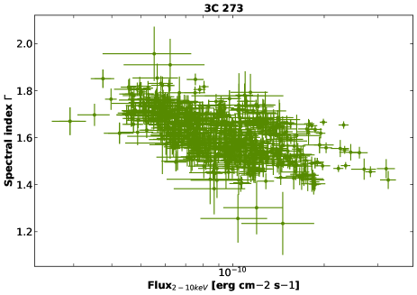
3 معالجة البيانات
أُجري اختزال البيانات والتحليل العلمي باستخدام Swift_xrtproc، وهي أداة برمجية طُورت بالتعاون بين فريق Open Universe ومركز ASI Space Science Data Center (SSDC). وتستخدم هذه الأداة برمجيات تحليل بيانات XRT (XRTDAS66 6 طُورت تحت مسؤولية ASI SSDC)، وأداتي التحليل الطيفي والتصويري XSPEC وXIMAGE، المدرجتين في حزمة HEASoft77 7 https://heasarc.gsfc.nasa.gov/docs/software/heasoft/، والصادرة حالياً بالنسخة V6.28.
3.1 Swift_xrtproc
تنفذ Swift_xrtproc اختزالاً كاملاً للبيانات، من بيانات XRT الخام إلى منتجات بيانات معايرة. وتُحلل البيانات الطيفية والتصويرية المأخوذة في نمط PC أو WT وفق الإجراءات القياسية. والخطوات الرئيسية التي تُنفذ على كل رصد من Swift-XRT هي:
-
1.
تنزيل تلقائي للبيانات الخام وملفات المعايرة من أحد أرشيفات Swift الرسمية.
-
2.
توليد خرائط التعريض ومنتجات البيانات المعايرة، لكل لقطة ولرصد Swift كاملاً، باستخدام مهمة XRTPIPELINE واعتماد معاملات ومعايير ترشيح قياسية.
-
3.
توليد ملفات أطياف المصدر والخلفية. تُقدَّر عدّات المصدر ضمن دائرة نصف قطرها 20 بكسل عندما لا يكون التراكب88 8 يحدث التراكب عندما يصيب أكثر من فوتون البكسل نفسه في مدة أقصر من زمن قراءة XRT-CCD، وهو عادةً 2.5 ثانية في نمط PC حاضراً. وفي حالة نمط PC تُستخرج الخلفية من منطقة حلقية متمركزة حول المصدر وبنصف قطر كبير بما يكفي لتجنب التلوث بفوتونات المصدر. أما في نمط WT فيُقدَّر طيف الخلفية من رصد عميق مأخوذ من أرشيف XRT.
-
4.
تصحيح التراكب. يُجرى تحقق من معدل عدّ المصدر لتحديد ما إذا كانت البيانات متأثرة بالتراكب. وفي حال وجود التراكب تُستخرج البيانات الطيفية مجدداً مع استبعاد الأجزاء المركزية من دالة انتشار النقطة، وذلك بأخذ العدّات في منطقة حلقية ذات نصف قطر داخلي يُختار تبعاً لمعدل العدّ المقاس (Vaughan et al., 2006).
-
5.
ملاءمة طيفية باستخدام حزمة XSPEC (Arnaud, 1996) مع افتراض نموذج قانون قوة ونموذج قطع مكافئ لوغاريتمي.
-
6.
تحويل بيانات أفضل ملاءمة طيفية إلى وحدات f لرسم SED.
-
7.
تحليل فوتومتري باستخدام XIMAGE لتقدير معدلات العد، أو الحدود العليا، في أربعة نطاقات طاقية: 0.3-1.0، 1.0-2.0، 2-10، و0.3-10 keV، للبيانات المأخوذة في نمط قراءة PC.
-
8.
تحويل معدل العدّ إلى فيض أشعة سينية في نطاقي الطاقة 0.5-10 keV و2-10 keV وبوحدات f عند الطاقات 0.5 و1.5 و4.5 keV
-
9.
تقدير الفيض أو الحد الأعلى بوحدات f عند 1 keV إما من طيف أفضل الملاءمة أو من البيانات الفوتومترية (إذا كان المصدر أضعف من أن يسمح بملاءمة طيفية)، بما يلائم توليد منحنيات الضوء وتحليل المجال الزمني.
3.1.1 التحليل الطيفي
استخدمنا حزمة الملاءمة الطيفية XSPEC، النسخة 12.11، لملاءمة بيانات الأشعة السينية المولدة كما وُصف أعلاه مع نموذج قانون قوة (المعادلة 1) ونموذج قطع مكافئ لوغاريتمي (المعادلة 2)، مع تثبيت مقدار عمود الامتصاص (NH) عند القيمة المجرية.
| (1) |
حيث إن هو معامل الفوتونات الطيفي.
| (2) |
حيث إن هو معامل الفوتونات الطيفي عند 1 keV و هو معامل الانحناء. اخترنا هذه الأشكال الطيفية لأنها توفر عموماً وصفاً جيداً لأطياف الأشعة السينية للبلازارات (مثلاً Massaro et al., 2006) مع إبقاء عدد المعاملات الحرة في حده الأدنى. واعتُمدت إحصاءات Cash (Cash, 1979) لجميع الملاءمات الطيفية، مع تجميع البيانات بأداة grppha لتتضمن عدّاً واحداً على الأقل في كل صندوق طاقي (Humphrey et al., 2009).
3.1.2 تحليل الصور
حُللت أيضاً جميع أرصاد XRT التي أُجريت في نمط PC باستخدام حزمة تحليل صور الأشعة السينية XIMAGE (V4.5.1) 99 9 https://heasarc.gsfc.nasa.gov/xanadu/ximage/. والإجراء المستخدم مكافئ لذلك المنفذ في أداة Swift_deepsky (Giommi et al., 2019, 2020b)، التي تنجز تقديراً فوتومترياً للفيض باستخدام بيانات الأشعة السينية في أربعة نطاقات طاقية: 0.3-10 keV (النطاق الكامل)، و0.3-1.0 keV (النطاق اللين)، و1.0-2.0 keV (النطاق المتوسط)، و2.0-10.0 keV (النطاق الصلب). قِيست خلفية الصورة باستخدام الأمر XIMAGE/background، وحُصل على عدّات المصدر باستخدام أداة XIMAGE/sosta مع التمركز على الهدف وعدّ الأحداث في صناديق يضم حجمها 80% من فيض المصدر (انظر Giommi et al., 2019, لمزيد من التفاصيل). كما قُدرت الميول الطيفية من نسبة الصلادة، المعرفة بأنها النسبة بين العدّات في النطاقين الصلب واللين. وحُولت معدلات العد (أو الحدود العليا) إلى فيوض أشعة سينية بافتراض NH مساوية للقيمة المجرية، وطيف قانون قوة بمعامل طيفي مساو للقيمة المقدرة من تحليل XSPEC الطيفي عند توافرها أو من نسبة الصلادة. وعندما لم يكن أي تقدير للميل الطيفي ممكناً، افتُرض أن المعامل الطيفي يساوي 1.8. حُسبت الفيوض بوحدات f ، الملائمة لرسم SED، عند الطاقات المرجعية 0.5 و1.5 و4.5 keV. وأخيراً، استُحصل تقدير ثان للميل الطيفي عبر ملاءمة خطية بالمربعات الصغرى لفيوض f عند 0.5 و1.5 و4.5 keV.
4 النتائج
عالجنا ما مجموعه 31,068 رصداً أو لقطات منفردة من Swift XRT للبلازارات 65 المدرجة في الجدول LABEL:TheSample. وأدى ذلك إلى توليد 29,050 طيفاً بالأشعة السينية، و21,141 تقديراً فوتومترياً للفيض، و206 حداً أعلى.
4.1 معاملات أفضل الملاءمة والفيوض
تُعرض نتائج ملاءمات XSPEC الطيفية لكل طيف يتضمن ما لا يقل عن 20 عدّة مصدر في الجدول التفاعلي على الشبكة المتاح في https://openuniverse.asi.it/blazars/swift، (انظر الشكل 2). يعطي العمود 1 اسم المصدر، ويعطي العمودان 2 و3 المطلع المستقيم والميل وفق J2000.0، وتقدم الأعمدة 4 و5 معامل الفوتونات الطيفي لأفضل ملاءمة مع الخطأ و المختزل، وتعطي الأعمدة 6 و7 و8 ، ومعامل أفضل الملاءمة و لنموذج القطع المكافئ اللوغاريتمي، ويعطي العمودان 9 و10 الفيض المرصود في نطاقي 0.5-2.0 keV و2-10 keV، ويعطي العمود 11 زمن الرصد. وتتاح المجموعة الكاملة من النتائج أيضاً بصيغة ملف fits1010 10 https://openuniverse.asi.it/OU4Blazars/oublazars_swift_spectra_v1.0.fits.gz الذي يصف الجدول 2 بنيته.
4.1.1 نماذج قانون القوة مقابل القطع المكافئ اللوغاريتمي
تؤكد نتائجنا بإحصاءات كبيرة أن نموذج القطع المكافئ اللوغاريتمي يلائم عموماً الشكل الطيفي للأشعة السينية في بلازارات HBL على أفضل نحو، في حين تلائم مصادر LBL عادةً بصورة أفضل بقانون قوة بسيط. وتُظهر بلازارات IBL غالباً أطيافاً أكثر تعقيداً، إذ في هذه الحالات تندمج النهاية الحادة للمركبة السنكروترونية مع مركبة كومبتون العكسية الأكثر تسطحاً بكثير في نطاق الأشعة السينية. وكمثال خاص على بلازار HBL، يرسم الشكل 3 توزيع قيم إحصاءات Cash لأفضل ملاءمة مقسومة على عدد درجات الحرية (Cstat/d.o.f.) لملاءمات قانون القوة والقطع المكافئ اللوغاريتمي للجرم Mrk421. ويوضح المدرج التكراري الأحمر، الأكثر حدة والأقل قيمة عند الذروة في حالة القطع المكافئ اللوغاريتمي، أن هذا النموذج الطيفي تمثيل أفضل من قانون قوة بسيط. وتُستحصل نتائج مشابهة لمعظم البلازارات من نوع HBL. وتتسم أطياف الأشعة السينية لبلازارات IBL غالباً بطيف قانون قوة حاد، لأن نطاق مرور XRT في هذه الأجرام يغطي نهاية ذيل السنكروترون ويُظهر أحياناً بداية المركبة الصلبة الثانية في SED. ويمثل طيف الأشعة السينية لبلازارات LBL جيداً بطيف قانون قوة بسيط ذي ميل مسطح، بقيمة متوسطة قدرها . ومع ذلك، ففي بعض الحالات (انظر مثلاً SED لـ 3C273 وCTA102 في الشكل 4) توجد دلائل على تسطح باتجاه الطرف عالي الطاقة من نافذة طاقة XRT.
4.2 تحليل الصور
تُعطى نتائج تحليل الصور، بما في ذلك معدلات العد، والفيوض في نطاقي 0.5-10.0 keV و2-10 keV، وفيوض f عند 0.5 و1.0 و1.5 و4.5 keV، فضلاً عن تقديرين للمعامل الطيفي، في ملف بصيغة fits المذكور أعلاه والموصوف في الجدول 2.
4.3 توزيعات الطاقة الطيفية
دُمجت بيانات أفضل الملاءمة الطيفية وفيوض الأشعة السينية المقدرة من تحليل الصور مع بيانات أرشيفية متعددة الترددات استُرجعت باستخدام برمجية VOU-Blazars (Chang et al., 2020) لبناء SED من الراديو إلى -ray لكل جرم في العينة. وتتيح أداة VOU-Blazars الوصول إلى بيانات من أكثر من 70 فهرساً وقاعدة بيانات طيفية تغطي الطيف الكهرومغناطيسي بأكمله. وتقدم الأشكال 4 و5 و6 أمثلة على SEDs لبلازارات تمثيلية من فئات LBL وIBL وHBL. وتتاح SED لجميع البلازارات في العينة على الشبكة في https://openuniverse.asi.it/blazars/swift. تمثل النقاط الرمادية بيانات أرشيفية، والرموز الخضراء بيانات أفضل ملاءمة طيفية من XSPEC، والنقاط الحمراء من قياسات XIMAGE/sosta، والنقاط الصفراء الفاتحة هي فيوض f عند 1 keV المحسوبة كما وُصف في القسم 4.4. لاحظ أن النقاط الحمراء لا تظهر في حالات الشدة العالية عندما استُخدم نمط قراءة WT، وهو ما يعكس أن تحليل الصور لم يُجر إلا عندما كان XRT يعمل في نمط PC.
| Column | Format | Units | Description |
|---|---|---|---|
| Blazar name | 15A | Blazar name | |
| R.A. | D | deg | Right Ascension in degrees (J2000.0 epoch) |
| Dec. | D | deg | Declination in degrees (J2000.0 epoch) |
| MJD | D | days | Modified Julian Day of observation start time |
| Obs_time | D | s | observation start time in units yyyy.ff |
| where ff is the fraction of year | |||
| Sequence | A | Swift observation ID | |
| Flux2_10-PL | D | erg cm-2 s-1 | 2-10 keV flux from best fit power-law model |
| Flux2_10-PL_error | D | erg cm-2 s-1 | 1 sigma error on Flux2_10-PL |
| Flux05_2-PL | D | erg cm-2 s-1 | 0.5-2.0 keV flux from best fit power-law model |
| Flux05_2-PL_error | D | erg cm-2 s-1 | 1 sigma error on Flux05_2-PL |
| Flux03_3-PL | D | erg cm-2 s-1 | 0.3-3.0 keV flux from best fit power-law model |
| Flux03_3-PL_error | D | erg cm-2 s-1 | 1 sigma error on Flux03_3-PL |
| -PL | D | reduced for power-law model | |
| d.o.f.-PL | D | degrees of freedom for power-law model | |
| -LP | D | reduced for log-parabola model | |
| d.o.f.-LP | D | degrees of freedom for log-parabola model | |
| Photon_index | D | best fit photon index for power-law fit | |
| Photon_index_error | D | error on best fit photon index for power-law fit | |
| Normalisation-PL | D | best fit power-law normalisation | |
| Normalisation-PL_error | D | error on best fit power-law normalisation | |
| D | best fit parameter for log-parabola fit | ||
| _error | D | error on parameter for log-parabola fit | |
| D | best fit parameter for log-parabola fit | ||
| _error | D | error on parameter for log-parabola fit | |
| Normalisation-LP | D | best fit log-parabola normalisation | |
| Normalisation-LP_error | D | error on best fit log-parabola normalisation | |
| Snapshot | 3A | swift snapshot number | |
| "TOT" for full observation | |||
| f @1.0keV | D | erg cm-2 s-1 | f flux at 1.0 keV |
| f @1.0keV_error | D | erg cm-2 s-1 | error f flux at 1.0 keV |
| Datamode | 2A | XRT data readout mode: PC or WT | |
| I-f @0.5keV | D | erg cm-2 s-1 | f flux at 0.5 keV from image analysis |
| I-f @0.5keV_error | D | erg cm-2 s-1 | error f flux at 0.5 keV |
| I-f @1keV | D | erg cm-2 s-1 | f flux at 1.0 keV from image analysis |
| I-f @1keV_error | D | erg cm-2 s-1 | error f flux at 1.0 keV |
| I-f @1.5keV | D | erg cm-2 s-1 | f flux at 1.5 keV from image analysis |
| I-f @1.5keV_error | D | erg cm-2 s-1 | error f flux at 1.5 keV |
| I-f @4.5keV | D | erg cm-2 s-1 | f flux at 4.5 keV from image analysis |
| I-f @4.5keV_error | D | erg cm-2 s-1 | error f flux at 4.5 keV |
| I-Flux0510 | D | erg cm-2 s-1 | 0.5-10.0 keV flux from image analysis |
| I-Flux0510_error | D | erg cm-2 s-1 | error on 0.5-10.0 keV flux from image analysis |
| I-Flux210 | D | erg cm-2 s-1 | 2.0-10.0 keV flux from image analysis |
| I-Flux210_error | D | erg cm-2 s-1 | error on 2.0-10.0 keV flux from image analysis |
| I-Photon_index | D | power law photon index fit from hardness ratio | |
| I-Photon_index_error | D | error on photon index for power-law fit | |
| SED-Photon_index | D | photon index for power-law fit estimated | |
| from a fit to I-f @0.5keV, | |||
| I-f @1.5keV and I-f @4.5keV | |||
| SED-Photon_index_error | D | error on photon index | |
| SED-Photon_index_error | D | error on photon index for power-law fit | |
| CR(0.3-10keV) | D | cts s-1 | count-rate in 0.3-10.0 keV energy band |
| CR(0.3-10keV)_error | D | cts s-1 | error on count-rate in 0.3-10.0 keV energy band |
| O-f @1keV | D | erg cm-2 s-1 | overall f flux at 1.0 keV for lightcurves |
| O-f @1keV_error | D | erg cm-2 s-1 | error on overall f flux at 1.0 keV |
| Upper limit flag | 2A | flag set to ’UL’ if the count rate is a 3 limit, | |
| blank otherwise |
4.3.1 طاقة ذروة السنكروترون ( )
يمكن تقدير قيم موثوقة لـ مباشرة من طيف الأشعة السينية في جميع المصادر التي يكون فيها نموذج القطع المكافئ اللوغاريتمي ملائماً جيداً للبيانات وتكون واقعة داخل نطاق مرور XRT أو قريبة منه. ومن Massaro et al. (2006) لدينا
| (3) |
حيث إن و هما معاملا المعادلة 2. حسبنا في جميع الحالات التي أمكن فيها الحصول على قيم جيدة التقدير لـ و وكانت المعادلة 3 تعطي قيماً قريبة من نطاق الأشعة السينية لـ Swift XRT أو ضمنه. ووجدنا أن تغيرات كبيرة في هذا المعامل تُكتشف في أجرام كثيرة. وكمثال على هذا السلوك، يرسم الشكل 7 بدلالة الزمن في حالة Mrk421، وهو الجرم الأكثر رصداً في العينة، مبيناً تغيرات كبيرة متكررة تمتد على أكثر من رتبتين عشريتين، من أقل من 0.1 إلى أكثر من 20 keV. والتغيرات الكبيرة في شائعة في معظم بلازارات HBL، كما يوضح الشكل 8 الذي يرسم توزيع للجرم Mrk421 مع ثلاثة مصادر تمثيلية أخرى. ينبغي التعامل بحذر مع القيم القريبة من الطرفين المنخفض والعالي الطاقة في الشكل 8 (وربما اعتبارها حدوداً، انظر مثلاً Kapanadze et al., 2016b, 2020) لأنها تقع عند حافة مجال طاقة XRT. ومع ذلك، فإن وتيرة حدوثها منخفضة وأثرها في الشكل العام للتوزيع محدود.
4.4 بيانات المجال الزمني
تقع الدراسات الزمنية التفصيلية لانبعاث الأشعة السينية في البلازارات خارج نطاق هذه الورقة. وفيما يلي نقتصر على عرض منحنيات الضوء عند 1 keV لجميع البلازارات في العينة، والتعليق بإيجاز على التغيرية طويلة الأمد وتغيرات الفيض بين اللقطات المتجاورة، استناداً إلى فحص بصري للبيانات. وستكون دراسة شاملة للسلوك الزمني للبلازارات، اعتماداً على البيانات المقدمة هنا، موضوع منشور مستقبلي.
تستند منحنيات الضوء المعروضة في هذه الورقة إلى فيوض 1 keV (f )، المحسوبة بوصفها قيمة أفضل ملاءمة (والخطأ الإحصائي) لتطبيع قانون القوة، مضروبة في 1.6 للتحويل من وحدات XSPEC إلى erg cm-2 s-1، أو بتحويل تقدير معدل العد من XIMAGE في النطاق اللين إلى 1 keV عندما يُكشف أقل من 20 عدّة مصدر، أو باستخدام حدود عليا 3 مقدرة بأمر XIMAGE/sosta في حالة عدم الكشف.
4.4.1 منحنيات الضوء طويلة الأمد
يمكن الوصول على الشبكة إلى منحنيات الضوء f عند 1 KeV، التي تغطي الفترة من نوفمبر 2004 إلى نهاية 2020 لجميع المصادر في العينة، على https://openuniverse.asi.it/blazars/swift/. وتعرض الأشكال 9 و10 و11 أمثلة على منحنيات الضوء لـ 5 بلازارات تمثيلية من أنواع LBL وIBL وHBL، على التوالي. تمثل النقاط الزرقاء فيوضاً متوسطة على كامل الرصد، وتقابل النقاط الحمراء لقطات منفردة. وتوجد في جميع المصادر تغيرية كبيرة في اللمعان على سعات ومقاييس زمنية مختلفة، تمتد من عامل قدره بضعة أضعاف إلى أكثر من عامل 200. وتُدرج النسبة بين أعلى وأدنى فيض مرصود في كل مصدر في العمود (5) من الجدول LABEL:TheSample.
يمكن إنتاج منحنيات ضوء مبنية على فيوض XRT المدمجة في نطاقات 0.5-2.0 keV و0.3-3.0 keV و0.5-10 keV و2-10 keV، أو فيوض f عند طاقات 0.5 keV و1.5 keV و4.5 keV، باستخدام البيانات المقدمة في ملف fits الموصوف في الجدول 2.
4.4.2 سلوك أصلب عند السطوع وألين عند السطوع
لوحظت لأول مرة تغيرات طيفية مرتبطة بتغيرات الشدة في البلازارات في أرصاد الأشعة السينية المبكرة باستخدام EXOSAT للجرم PKS2155-304 (Morini et al., 1986) وللجرم Mrk421 (George et al., 1988). وأظهرت دراسة أجريت على عينة من 36 من BL Lacs أن هذا السلوك سمة شائعة لأجرام BL Lacs (Giommi et al., 1990). وفيما يلي نبحث هذه الارتباطات في عينتنا، التي تشمل جميع أنواع البلازارات وعدداً أكبر بكثير من الأرصاد.
ترسم اللوحة العليا من الشكل 12 معامل الطيف لأفضل ملاءمة بقانون القوة بدلالة فيض الأشعة السينية للمصدر Mrk501. ويظهر اتجاه واضح، إذ تُرصد ميول طيفية حادة ( 2.5) خلال فترات الفيض المنخفض، وقيم أشد صلابة بكثير ( 1.5) خلال حالات الشدة العالية. وهذا السلوك، أي أصلب عند السطوع، شائع في مصادر HBL في عينتنا، كما يمكن ملاحظته أيضاً في SEDs في الشكل 6.
وتُعرض حالة الاتجاه المعاكس (ألين عند السطوع) في اللوحة الوسطى من الشكل 12 في حالة البلازار IBL OJ287. ففي هذه الحالة ذات المتوسطة، يزداد فيض الأشعة السينية بقوة عندما تبلغ قيماً أكبر من Hz ويدخل الذيل الحاد لمركبة SED السنكروترونية نطاق الأشعة السينية. أما عندما تقع بدلاً من ذلك عند ترددات أدنى، فلا تصل المركبة السنكروترونية إلى طاقات الأشعة السينية، ويكون الفيض في نطاق الأشعة السينية عائداً فقط إلى مركبة كومبتون العكسية الصلبة.
ويوضح الجزء السفلي من الشكل 12 حالة الجرم LBL 3C273، الذي يُظهر سلوكاً ظاهرياً من نوع أصلب عند السطوع. ومن المرجح ألا يكون ذلك ناتجاً عن تصلب جوهري لانبعاث كومبتون العكسي من النفاثة، بل عن مزيج متغير من مركبات مختلفة. والسبب هو أنه خلال حالات الشدة العالية يهيمن الإشعاع المسطح من النفاثة على انبعاث الأشعة السينية الأشد حدة الناتج عن التراكم على الثقب الأسود فائق الكتلة (مثلاً Grandi and Palumbo, 2004).
4.4.3 التغيرية السريعة
إن تغيرية لمعان الأشعة السينية الكبيرة على مقاييس زمنية متنوعة في البلازارات شائعة وموثقة بكثرة في الأدبيات (مثلاً Giommi et al., 1990; Kapanadze et al., 2016a; Wang et al., 2018; Kapanadze et al., 2020, 2018d, 2018c, 2017, 2018b, 2018a, والمراجع الواردة فيها). بحثنا عن تغيرية كبيرة السعة ( 50%) على مقاييس زمنية في حدود ساعة واحدة أو بضع ساعات، وذلك بمقارنة الفيض المرصود خلال لقطات متجاورة أو متقاربة، تفصل بينها عادةً دورة Swift مدارية واحدة، أو 1.5 ساعات. ونادراً ما تُرصد تغيرات كبيرة في اللمعان على هذه المقاييس الزمنية في عينتنا. وقد يعكس ذلك أن هذا النوع من التغيرات نادر جوهرياً في البلازارات، لكنه قد يعود أيضاً إلى محدودية أخذ العينات أو استراتيجية الرصد، إذ تألفت الأرصاد في حالات كثيرة من تعريضات ذات لقطة واحدة. وترد قائمة الأجرام الثلاثة عشر التي لوحظت فيها تغيرية سريعة في الجدول 3، حيث يعطي العمود 1 اسم البلازار، ويعطي العمود 2 معرف رصد Swift، ويعطي العمود 3 الزمن بوحدات MJD، ويعطي العمود 4 فرق الزمن بين اللقطات التي رُصدت فيها التغيرية، ويعطي العمود 5 النسبة بين الفيض المقاس في اللقطة الأخيرة وذلك المقاس في اللقطة الأولى.
5 المناقشة
يُظهر التحليل المعروض في الأقسام السابقة أن تغيرية الأشعة السينية طويلة الأمد وكبيرة السعة حاضرة في بيانات جميع بلازارات العينة على طيف من المقاييس الزمنية (انظر الجدول LABEL:TheSample ومنحنيات الضوء في الأشكال 11 و10 و9).
ولا يمكن رؤية دوريات أو انتظامات واضحة من فحص بصري لمنحنى الضوء لأي جرم. ومع ذلك، لا يمكن اعتبار هذه النتائج رؤية غير متحيزة للسلوك طويل الأمد للبلازارات، لأن مصادر الأشعة السينية التي يرصدها Swift مراراً غالباً ما تُوجَّه إليها الأرصاد كأهداف فرصة أثارها نشاط توهجي اكتُشف في أجزاء أخرى من الطيف الكهرومغناطيسي. ومع ذلك، توفر النتائج المعروضة هنا مجموعة بيانات جديدة وغنية ومفيدة جداً لدراسة الخصائص الرصدية للبلازارات وتقييد النماذج الفيزيائية في مجالي الطاقة والزمن. وفيما يلي نقدم بعض الاعتبارات الأولية بشأن خصائص البلازارات التي لا تتأثر على نحو مهم بانحيازات اختيار العينة.
5.1 انبعاث الأشعة السينية في البلازارات من الأنواع المختلفة: HBLs مقابل IBLs مقابل LBLs
تضم عينتنا 24 بلازاراً من نوع HBL، و12 من نوع IBL، و29 من نوع LBL. ويكتسب نطاق الأشعة السينية أهمية خاصة في طيف الطاقة للبلازارات من جميع الأنواع، إذ إن فيض الأشعة السينية في مصادر HBL عائد بالكامل إلى انبعاث السنكروترون، في حين تندمج نهاية ذيل السنكروترون في أجرام IBL غالباً مع المركبة الثانية عالية الطاقة (كومبتون العكسي أو غيرها). أما في مصادر LBL فيرسم فيض الأشعة السينية بداية الحدبة الثانية في SED. لذلك يُتوقع وجود أشكال طيفية وخصائص تغيرية مختلفة، وربما أيضاً تأخرات زمنية بين نطاقي الأشعة السينية اللين والصلب، في البلازارات من الأنواع المختلفة.
توفر مواضع وخصائص تغيرها معلومات حاسمة عن الظروف الفيزيائية في نفاثات البلازارات. ومن بين المعاملات الفيزيائية المهمة التي يمكن تقييدها طاقة الجسيمات القصوى، وأزمنة التسريع والتبريد، وحجم منطقة الإصدار، وتوزيع الجسيمات المسؤولة عن الإشعاع غير الحراري الذي نرصده. ويمكن تلخيص النتائج التي حصلنا عليها من مجموعة بياناتنا الكبيرة بشأن هذا المعامل المهم على النحو الآتي:
- •
-
•
إن موضع ليس ثابتاً مع الزمن، كما لوحظ قبل أكثر من عشرين عاماً في بيانات BeppoSAX للجرمين Mrk501 و1ES2344+514 (Pian et al., 1998; Giommi et al., 2000)، ودُرس مؤخراً بتفصيل أكبر في بعض الأجرام (مثلاً Kapanadze et al., 2018a, 2020). وتُظهر نتائجنا أن التغيرات المتكررة والكبيرة في ، الممتدة على مجال يزيد كثيراً على عامل 100 في بعض الأجرام، سمة شائعة جداً، وربما كلية الانتشار، في HBLs. وكمثال، يوضح الشكل 7 مدى تكرر تغير في الزمن والسعة في Mrk421، وهو البلازار الذي رصده Swift أكثر من غيره. وتُظهر SEDs المرسومة في الشكل 6، وتلك المتاحة على الشبكة، أن هذه الظاهرة موجودة في معظم HBLs في العينة. ويعرض الشكل 8 توزيع في أربعة بلازارات HBL تمثيلية، حيث نرى أن البلازارات من هذا النوع تقضي جزءاً مهماً من الوقت عند قيم تبعد عن القيمة المتوسطة بأكثر من عامل 5. لاحظ أن هذه المدرجات التكرارية قد تكون تمثيلاً مشوهاً جزئياً لتوزيعات الاحتمال الجوهرية بسبب انحيازات اختيار العينة. والسبب أن أرصاد ToO تميل إلى تتبع قيم الكبيرة أثناء التوهجات، لا الفترات الهادئة. إضافةً إلى ذلك، يحد نطاق مرور XRT الضيق نسبياً من المجال الذي يمكن أن تُقدر فيه بأمان إلى keV و8-10 keV.
-
•
يصعب كشف تغيرات في مصادر IBL باستخدام بيانات XRT وحدها لأن في هذه الأجرام تقع خارج نطاق الأشعة السينية. وعلى الرغم من ذلك، وجد Giommi et al. (2008)، بدمج بيانات Swift UVOT وXRT، أدلة على تغيرات في البلازار IBL S50716+714. وقد وجد Xiong et al. (2020) وMorokuma et al. (2020) اتجاهات أصلب عند السطوع في الجزأين تحت الأحمر والبصري من طيف الجرم نفسه، مما يشير إلى أن تغيرات كبيرة في ينبغي أن تكون موجودة أيضاً في بلازارات IBL.
-
•
يصعب أيضاً رصد تغيرات تردد ذروة SED في LBLs بسبب غياب أرصاد متعددة الحقب في الأشعة تحت الحمراء البعيدة، حيث تقع في هذه المصادر. ومع ذلك، ففي حالات CTA 102 و3C279 و3C454.3 على الأقل (انظر الشكل 4)، حيث كُشفت تغيرات كبيرة في الشدة في نطاقات IR/optical/UV والأشعة السينية، لم تُكشف تغيرات طيفية مهمة، بما يتسق مع عدم وجود دليل على زيادة كبيرة في في LBLs.
وقد كشف رصد بصري-تحت أحمر للبلازارات المصدرة لأشعة -ray من أنواع مختلفة (Bonning et al., 2012) عن نزعة لدى FSRQs (وجميعها من نوع LBL) إلى أن تصبح أكثر زرقة عندما تخفت. وفُسّر هذا التصلب الظاهري بأنه ناتج عن أن انبعاث قرص التراكم الأزرق يصبح أكثر هيمنة أثناء الحالات الخافتة لمركبة النفاثة. وعندما وُجدت المصادر في حالة ساطعة كان الطيف يميل إلى أن يصبح أكثر احمراراً (أشد حدة)، مما يعني أن في هذه المصادر لم تكن تتحرك من الأشعة تحت الحمراء البعيدة إلى طاقات قريبة من النطاق البصري.
-
•
إن معظم تعززات فيض الأشعة السينية في مصادر HBL ناتجة عن آثار التصلب الطيفي، لا عن زيادة كلية في الفيض عند جميع الطاقات. ويكون هذا الأثر أكبر عندما تقع في نطاق الأشعة السينية اللينة جداً. ففي هذه الحالة تؤدي زيادة صغيرة في هذا المعامل إلى تسطيح طيف الأشعة السينية محفزةً زيادات كبيرة في الفيض. ومن ناحية أخرى، عندما تبلغ قيماً أكبر من نطاق الطاقة الذي يُقاس فيه الفيض، لا تُرصد غالباً زيادة فيض مهمة. وقد يعود هذا السلوك إلى زيادة في من دون زيادة مرتبطة بها في تطبيع الطيف، أو إلى بداية مركبة صلبة ثانية مرتبطة بمنطقة إصدار مختلفة. وقد نظر Giommi et al. (2000) أولاً في هذه الفرضية الثانية، إذ فسّر إزاحة في 1ES2344+514 على أنها نتيجة لبروز مركبة مختلفة عند الطاقات العالية.
تُقدَّر معظم قيم الواردة في الأدبيات في ظل أحد هذه الظروف: أ) على أساس رصد واحد بالأشعة السينية، ب) اعتماداً على القيمة المتوسطة لعدة قياسات بالأشعة السينية، أو ج) اعتماداً على بيانات أرشيفية متفرقة بالأشعة السينية مأخوذة في عهود مختلفة. وفي جميع الحالات قد تكون قيمة متحيزة للأسباب الآتية: عندما يكون البلازار قد رُصد مرات عديدة، تكون الأرصاد غالباً نتيجة حملات مراقبة أُجريت استجابةً للإعلان عن توهج كبير أو حالة عالية للجرم. وبما أن هناك ارتباطاً قوياً بين شدة المصدر و (في معظم الحالات تكون أعلى عندما يسطع المصدر، مثلاً Kapanadze et al., 2018a, 2020) فإن الفيض المتوسط و المقابلة سيكونان متحيزين نحو قيم عالية. أما عندما لا يكون للبلازار إلا رصد واحد بالأشعة السينية (مثل الأجرام المكتشفة في مسح RASS، Voges et al. (1999)، ولم تُرصد بعد ذلك قط)، فإن قيمة تكون سحباً عشوائياً من توزيع (الجوهرية، وربما المعتمدة على الزمن) المشابه لتلك المبينة في الشكل 8. وإذا كان هذا السحب الوحيد قيمة منخفضة تقابل فيضاً دون حد حساسية الأشعة السينية، فلن يُكتشف البلازار أصلاً. أما القيم التي تعلو حد الأشعة السينية لكنها قريبة منه، كما في حالات واقعية كثيرة، فستكون لها قيمة متحيزة نحو قيم عالية.
لذلك قد لا تكون بعض ما يسمى البلازارات المتطرفة (Biteau et al., 2020) مصادر متطرفة حقاً، بل أجراماً تقضي معظم وقتها عند قيم مرتفعة باعتدال وصادف أنها اكتُشفت في حالة عالية.
5.2 نتائج غير متوقعة وعينات مستقبلية
لم يكن وجود البلازارات العابرة معروفاً حتى كشف 4FGLJ1544.3-0649 (Sahakyan and Giommi, 2020)، وهو أحد الأجرام في عينتنا. وقد ظل هذا الجرم مخفياً في الأرشيفات بوصفه واحداً من مصادر الراديو المجهولة الكثيرة من دون انبعاث عالي الطاقة مرافق، إلى مايو 2017 حين أبلغ Ciprini et al. (2017) عن ظهور مصدر عابر جديد من Fermi-LAT، مما حفز أرصاداً عند ترددات أخرى. وأدت هذه البيانات الجديدة إلى تحديد بلازار جديد، أصبح لبضعة أشهر واحداً من أسطع الأجرام من هذا النوع في نطاقي الأشعة السينية و-ray .
إن الوجود غير المتوقع للبلازارات العابرة يمكن أن يعقد أو حتى يعدل تصورنا لهذا النوع من المصادر إذا لم يكن 4FGLJ1544.3-0649 حالة معزولة، بل طرف جبل الجليد لظاهرة لم تُلحظ من قبل. ومن المرجح أن تكون مصادر مشابهة موجودة في البيانات الأرشيفية الحالية أو ستُعثر عليها في أرصاد حساسة مستقبلية.
يجري تلسكوب الأشعة السينية SRG/eROSITA (Merloni et al., 2012, 2020) مسحاً كاملاً للسماء بالأشعة السينية بحساسية جيدة ومكرراً في عهود مختلفة. وسيكون لهذا المسح أثر عميق في علم البلازارات باكتشاف بضعة آلاف من الأجرام الجديدة ذات كشوف متعددة، ولا سيما تلك الواقعة قرب قطبي الكسوف، مما يخفف الانحيازات الموصوفة أعلاه أو يزيلها بدرجة كبيرة. وتمثل مجموعة البيانات البالغة القيمة هذه، إلى جانب الأرشيفات العلمية للبعثات الفضائية المقبلة والسابقة والمراصد الأرضية، خزاناً هائلاً ومتنامياً باستمرار من المعلومات. ومن الواضح أنه لا يمكن تحويل هذه الإمكانات الهائلة بكفاءة إلى معرفة باتباع نهج تقليدي قائم على تحليل بيانات منخفضة أو متوسطة المستوى من كل أداة، إذ يتطلب كل منها خبرة نوعية. ولن تمكّننا من استغلال الإمكانات الكبيرة للأرشيفات المفتوحة بالكامل إلا الإتاحة السهلة الوصول والشفافة لمنتجات بيانات جاهزة علمياً، مانحةً إيانا، في هذه الحالة الخاصة، رؤية أكثر اكتمالاً بكثير للبلازارات. ويهدف العمل المعروض في هذه الورقة إلى أن يكون خطوة في هذا الاتجاه.
6 الخلاصة
حللنا بيانات Swift XRT المأخوذة في نمطي PC وWT لـ 65 بلازاراً رُصدت ما لا يقل عن 50 مرة منذ الإطلاق في أواخر 2004 حتى نهاية 2020. وعالجنا ما مجموعه 31,068 رصداً ولقطات منفردة من Swift XRT باستخدام خط أنابيب برمجي يسمى Swift_xrtproc، يسترجع البيانات تلقائياً، وينجز تحليلاً طيفياً وفوتومترياً، ويكتب النتائج في قاعدة بيانات أرشيفية. ويكمل هذا العمل النتائج المعروضة في Giommi et al. (2019) ويوسعها، وهي قائمة على تحليل تصويري بالأشعة السينية للبلازارات التي رصدها Swift في نمط PC. ويمثل خطوة أخرى نحو تطوير أرشيف متعدد الرسل ومتعدد الأزمنة وعالي الشفافية لمنتجات بيانات البلازارات ونتائجها. استخدمنا مجموعة البيانات غير المسبوقة هذه لوصف السلوك الزمني والطيفي العام للبلازارات من أنواع مختلفة. وستُعرض في المستقبل القريب أوراق مخصصة للتحليل الزمني والنمذجة الطيفية والتنبؤ بانبعاث النيوترينوات.
إتاحة البيانات
تتاح جميع النتائج المولدة في إطار هذا العمل عبر أدوات وصفحات ويب منصة Open Universe، مثل تطبيق VOU-BLazars (Chang et al., 2020) والجدول التفاعلي على https://openuniverse.asi.it/blazars/swift/، وASI SSDC، والمرصد الافتراضي، وكذلك في ملف بصيغة fits يمكن تنزيله من الرابط الآتي:
https://openuniverse.asi.it/OU4Blazars/oublazars_swift_spectra_v1.0.fits.gz
| Name | Obsid | Date | T | ft2/ft1 |
|---|---|---|---|---|
| (MJD) | (Ks) | |||
| (1) | (2) | (3) | (4) | (5) |
| 1H0323+342 | 00035372001 | 53922.8 | 5 | 2.4 |
| 1H0323+342 | 00035630002 | 53926.6 | 6 | 1.7 |
| 1ES0414+009 | 00081691001 | 57353.9 | 6 | 0.5 |
| TXS0506+056 | 00083368006 | 58031.7 | 5 | 0.3 |
| 3C120 | 00037594042 | 56934.2 | 5 | 1.5 |
| OJ287 | 00033756119 | 57792.3 | 11 | 0.3 |
| OJ231 | 00031219001 | 54624.9 | 15 | 4.1 |
| PKS0548-322 | 00044002081 | 58370.9 | 5 | 0.3 |
| Mrk421 | 00030352011 | 53905.4 | 5 | 2.9 |
| PG1553+113 | 00031368076 | 57021.8 | 5 | 0.7 |
| EXO1811.7+3143 | 00013748001 | 59125.5 | 4 | 1.5 |
| 1ES1959+650 | 00034588249 | 59164.9 | 1 | 1.7 |
| PKS2155-304 | 00030795001 | 53946.1 | 75 | 2.7 |
| BLLac | 00034748002 | 57668.3 | 5 | 0.2 |
الشكر والتقدير
نقر باستخدام بيانات وأدوات تحليل وخدمات من منصة Open Universe، وASI Space Science Data Center (SSDC)، وAstrophysics Science Archive Research Center (HEASARC)، وAstrophysics Data System (ADS)، وNational Extra-galactic Database (NED).
يقر PG بدعم Technische Universität München - Institute for Advanced Studies، الممول من German Excellence Initiative (وبرنامج الإطار السابع للاتحاد الأوروبي بموجب اتفاقية المنحة رقم 291763)، وبالدعم المقدم من Excellence Cluster ORIGINS، الممول من Deutsche Forschungsgemeinschaft (DFG, German Research Foundation) في إطار Germany’s Excellence Strategy -EXEC-2094 - 390783311.
يقر CHB بدعم ICRANet والحكومة البرازيلية، الممول من مؤسسة CAPES، وزارة التعليم في البرازيل، في إطار المشروع BEX 15113-13-2.
يقر UBdA بدعم منحة CNPq Productivity Research Grant رقم 311997/2019-8 ومنحة Serrapilheira Institute رقم Serra - 1812-26906. كما يقر بتلقي زمالة FAPERJ Young Scientist رقم E-26/202.818/2019.
يقر RM بالدعم المالي من INAF (Istituto Nazionale di Astrofisica)، Osservatorio Astronomico di Roma، وASI (Agenzia Spaziale Italiana) بموجب عقد مع INAF: ASI 2014-049-R.0 المخصص لـ SSDC.
يقر NS بالدعم المقدم من Science Committee of RA في إطار مشروع البحث رقم 20TTCG-1C015.
نشكر المحكم على تعليقاته المفيدة.
References
- The Spectral Energy Distribution of Fermi Bright Blazars. ApJ 716 (1), pp. 30–70. External Links: Document, 0912.2040 Cited by: §1.
- The Spectral Energy Distribution of Fermi Bright Blazars. ApJ 716, pp. 30–70. External Links: Document, 0912.2040 Cited by: §1.
- Fermi Large Area Telescope Fourth Source Catalog. ApJS 247 (1), pp. 33. External Links: Document, 1902.10045 Cited by: §1.
- XSPEC: The First Ten Years. In Astronomical Data Analysis Software and Systems V, G. H. Jacoby and J. Barnes (Eds.), Astronomical Society of the Pacific Conference Series, Vol. 101, pp. 17. Cited by: item 5.
- Fermi Large Area Telescope Fourth Source Catalog Data Release 2. arXiv e-prints, pp. arXiv:2005.11208. External Links: 2005.11208 Cited by: §1.
- Progress in unveiling extreme particle acceleration in persistent astrophysical jets. Nature Astronomy 4, pp. 124–131. External Links: Document, 2001.09222 Cited by: §5.1.
- Some comments on radiation mechanisms in Lacertids. In Pittsburgh Conf. BL Lac Objects, A. M. Wolfe (Ed.), Pittsburgh, pp. 341–347. Cited by: §1.
- SMARTS Optical and Infrared Monitoring of 12 Gamma-Ray Bright Blazars. ApJ 756 (1), pp. 13. External Links: Document, 1201.4380 Cited by: 4th item.
- The Swift X-Ray Telescope. Space Sci. Rev. 120, pp. 165–195. External Links: astro-ph/0508071, Document Cited by: §2.
- Parameter estimation in astronomy through application of the likelihood ratio.. ApJ 228, pp. 939–947. External Links: Document Cited by: §3.1.1.
- The 3HSP catalogue of extreme and high-synchrotron peaked blazars. A&A 632, pp. A77. External Links: Document, 1909.08279 Cited by: §2.
- The Open Universe VOU-Blazars tool. Astronomy and Computing 30, pp. 100350. External Links: Document, 1909.11455 Cited by: §1, §4.3, إتاحة البيانات.
- Science with the Cherenkov Telescope Array. Published by World Scientific Publishing Co. Pte. Ltd.. External Links: Document Cited by: §1.
- Fermi LAT detection and Swift X-ray follow-up of a new gamma-ray/X-ray transient source Fermi J1544-0649 (Swift 154419.7-064915). The Astronomer’s Telegram 10482, pp. 1. Cited by: §5.2.
- An optical view of BL Lacertae objects. A&ARv 22, pp. 73. External Links: Document, 1407.7615 Cited by: §1.
- The Swift Gamma-Ray Burst Mission. ApJ 611, pp. 1005–1020. External Links: Document Cited by: §1.
- X-ray and ultraviolet observations of Markarian 421.. MNRAS 232, pp. 793–808. External Links: Document Cited by: §4.4.2.
- The Open Universe Initiative. In Space Capacity Building in the XXI Century. Studies in Space Policy, F. S. (Ed.), pp. 377–386. External Links: 1805.08505, Document Cited by: §1.
- A Study of BL Lacertae–Type Objects with EXOSAT. I. Flux Correlations, Luminosity, Variability, and Spectral Variability. ApJ 356, pp. 432. External Links: Document Cited by: §4.4.2, §4.4.3.
- Open Universe for Blazars: a new generation of astronomical products based on 14 years of Swift-XRT data. A&A 631, pp. A116. External Links: Document, 1904.06043 Cited by: §1, §3.1.2, §6.
- Open Universe survey of Swift-XRT GRB fields: Flux-limited sample of HBL blazars. A&A 642, pp. A141. External Links: Document, 2003.05153 Cited by: §3.1.2.
- AGILE and Swift simultaneous observations of the blazar S50716+714 during the bright flare of October 2007. A&A 487 (3), pp. L49–L52. External Links: Document, 0806.1855 Cited by: 3rd item.
- Dissecting the regions around IceCube high-energy neutrinos: growing evidence for the blazar connection. MNRAS 497 (1), pp. 865–878. External Links: Document, 2001.09355 Cited by: §1.
- Detection of exceptional X-ray spectral variability in the TeV BL Lac 1ES 2344+514. MNRAS 317 (4), pp. 743–749. External Links: Document, astro-ph/9907377 Cited by: 2nd item, 5th item.
- Simultaneous Planck, Swift, and Fermi observations of X-ray and -ray selected blazars. A&A 541, pp. A160. External Links: 1108.1114, Document Cited by: §1.
- Multi-frequency, multi-messenger astrophysics with Swift. The case of blazars. Journal of High Energy Astrophysics 7, pp. 173–179. External Links: 1503.04863, Document Cited by: §1.
- Jet and Accretion-Disk Emission Untangled in 3C 273. Science 306 (5698), pp. 998–1002. External Links: Document Cited by: §4.4.2.
- 2 and Poissonian Data: Biases Even in the High-Count Regime and How to Avoid Them. ApJ 693 (1), pp. 822–829. External Links: Document, 0811.2796 Cited by: §3.1.1.
- Neutrino emission from the direction of the blazar TXS 0506+056 prior to the IceCube-170922A alert. Science 361, pp. 147–151. External Links: 1807.08794, Document Cited by: §1.
- Mrk 421 after the Giant X-Ray Outburst in 2013. ApJ 848 (2), pp. 103. External Links: Document Cited by: §4.4.3.
- X-Ray Flaring Activity of MRK 421 in the First Half of 2013. ApJ 831 (1), pp. 102. External Links: Document Cited by: §4.4.3.
- The second strong X-ray flare and multifrequency variability of 1ES 1959+650 in 2016 January-August. MNRAS 473 (2), pp. 2542–2564. External Links: Document Cited by: §4.4.3, 2nd item, §5.1.
- Strong X-Ray and Multiwavelength Flaring Activity for 1ES 1959+650, 2016 August-2017 November. ApJS 238 (1), pp. 13. External Links: Document Cited by: §4.4.3.
- A recent strong X-ray flaring activity of 1ES 1959+650 with possibly less efficient stochastic acceleration. MNRAS 461 (1), pp. L26–L31. External Links: Document Cited by: §4.3.1.
- Swift Observations of Mrk 421 in Selected Epochs. III. Extreme X-Ray Timing/Spectral Properties and Multiwavelength Lognormality during 2015 December-2018 April. ApJS 247 (1), pp. 27. External Links: Document, 2004.00676 Cited by: §4.3.1, §4.4.3, 2nd item, §5.1.
- Swift Observations of Mrk 421 in Selected Epochs. I. The Spectral and Flux Variability in 2005-2008. ApJ 854 (1), pp. 66. External Links: Document Cited by: §4.4.3.
- Swift Observations of Mrk 421 in Selected Epochs. II. An Extreme Spectral Flux Variability in 2009-2012. ApJ 858 (2), pp. 68. External Links: Document Cited by: §4.4.3.
- Detection of very-high-energy gamma-ray transients with monitoring facilities. MNRAS 497 (3), pp. 3142–3148. External Links: Document, 2001.04503 Cited by: §1.
- High-energy neutrinos from extragalactic jets. Astroparticle Physics 3, pp. 295–302. External Links: Document Cited by: §1.
- Log-parabolic spectra and particle acceleration in blazars. III. SSC emission in the TeV band from Mkn501. A&A 448 (3), pp. 861–871. External Links: Document, astro-ph/0511673 Cited by: §3.1.1, §4.3.1.
- The 5th edition of the Roma-BZCAT. A short presentation. Ap&SS 357, pp. 75. External Links: Document, 1502.07755, Link Cited by: §2.
- eROSITA Science Book: Mapping the Structure of the Energetic Universe. arXiv e-prints, pp. arXiv:1209.3114. External Links: 1209.3114 Cited by: §5.2.
- eROSITA’s X-ray eyes on the Universe. Nature Astronomy 4, pp. 634–636. External Links: Document Cited by: §5.2.
- X-Ray Variability of the BL Lacertae Object PKS 2155-304 in the 0.1–6 keV Range. ApJ 306, pp. L71. External Links: Document Cited by: §4.4.2.
- Follow-up Observations for IceCube-170922A: Detection of Rapid Near-Infrared Variability and Intensive Monitoring of TXS 0506+056. arXiv e-prints, pp. arXiv:2011.04957. External Links: 2011.04957 Cited by: 3rd item.
- Active galactic nuclei: what’s in a name?. A&ARv 25, pp. 2. External Links: 1707.07134, Document Cited by: §1.
- Dissecting the region around IceCube-170922A: the blazar TXS 0506+056 as the first cosmic neutrino source. MNRAS 480, pp. 192–203. External Links: 1807.04461, Document Cited by: §1.
- The connection between x-ray- and radio-selected BL Lacertae objects. ApJ 444, pp. 567–581. Cited by: §1.
- BeppoSAX Observations of Unprecedented Synchrotron Activity in the BL Lacertae Object Markarian 501. ApJ 492 (1), pp. L17–L20. External Links: Document, astro-ph/9710331 Cited by: 2nd item.
- Connecting blazars with ultrahigh-energy cosmic rays and astrophysical neutrinos. MNRAS 468, pp. 597–606. External Links: 1611.06022, Document Cited by: §1.
- The strange case of the transient HBL blazar 4FGL J1544.3-0649. arXiv e-prints, pp. arXiv:2011.10237. External Links: 2011.10237 Cited by: §5.2.
- Unified Schemes for Radio-Loud Active Galactic Nuclei. PASP 107, pp. 803–845. Cited by: §1.
- Swift Observations of the X-Ray-Bright GRB 050315. ApJ 638 (2), pp. 920–929. External Links: Document, astro-ph/0510677 Cited by: item 4.
- The ROSAT all-sky survey bright source catalogue. A&A 349, pp. 389–405. External Links: 9909315, ISSN 0004-6361, Link Cited by: §5.1.
- Systematic Investigation of X-Ray Spectral Variability of TeV Blazars during Flares in the RXTE Era. ApJ 867 (1), pp. 68. External Links: Document, 1809.08036 Cited by: §4.4.3.
- Multicolor Optical Monitoring of the Blazar S5 0716+714 from 2017 to 2019. ApJS 247 (2), pp. 49. External Links: Document, 2002.08705 Cited by: 3rd item.